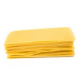
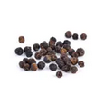
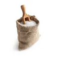
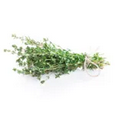
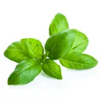
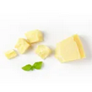
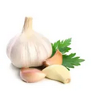

Informations :
- Temps : 2h05min
- Cuisson : 1h35min
- Difficulté : Moyenne
- Prix : Moyen
Ingrédients
8 personnes
- 1 paquet de lasagnes
 3 oignons jaunes
3 oignons jaunes 125g de beurre
125g de beurre 100g de farine
100g de farine- Poivre
- Sel
 70g de fromage râpé
70g de fromage râpé 3 pincées de muscade râpée
3 pincées de muscade râpée- Thym
- 2 feuilles de laurier
 20cl de vin rouge
20cl de vin rouge- Basilic
- 15cl d'eau
- 125g Parmesan
 600g de boeuf haché
600g de boeuf haché- 1 branche de celeri
- 2 gousses d'ail
- 1l de lait
Préparation :
- Faire revenir gousses hachées d'ail et les oignons émincés dans un peu d'huile d'olive.
- Ajouter la carotte et la branche de céleri hachée puis la viande et faire revenir le tout.
- Au bout de quelques minutes, ajouter le vin rouge. Laisser cuire jusqu'à évaporation.
- Ajouter la purée de tomates, l'eau et les herbes. Saler, poivrer, puis laisser mijoter à feu doux 45 minutes.
- Préparer la béchamel : faire fondre 100 g de beurre.
- Hors du feu, ajouter la farine d'un coup.
- Remettre sur le feu et remuer avec un fouet jusqu'à l'obtention d'un mélange bien lisse
- Ajouter le lait peu à peu.
- Remuer sans cesse, jusqu'à ce que le mélange s'épaississe.
- Ensuite, parfumer avec la muscade, saler, poivrer. Laisser cuire environ 5 minutes, à feu très doux, en remuant. Réserver.
- Préchauffer le four à 200°C (thermostat 6-7). Huiler le plat à lasagnes. Poser une fine couche de béchamel puis des feuilles de lasagnes, de la bolognaise, de la béchamel et du parmesan. Répéter l'opération 3 fois de suite.
- Sur la dernière couche de lasagnes, ne mettre que de la béchamel et recouvrir de fromage râpé. Parsemer quelques noisettes de beurre.
- Enfourner pour environ 25 minutes de cuisson.
- Bon appetit